Instrukcja dla klienta (wprowadzająca)
Jak wgrać wtyczkę i jak z niej korzystać — krok po kroku
Dla kogo jest ta instrukcja?
Dla osoby, która prowadzi stronę internetową i chce, żeby odpowiadała ona na pytania odwiedzających — sama, przez całą dobę.
Czy muszę znać się na komputerach?
Nie. Wszystko jest opisane po kolei, z obrazkami. Każdy obrazek pokazuje dokładnie to, co zobaczysz na swoim ekranie. Czerwona ramka na obrazku wskazuje miejsce, w które masz kliknąć.
Ile to zajmie?
Uruchomienie — około 20 minut. Potem obsługa to kwestia kilku kliknięć.
Wersja wtyczki 1.0.0
Obrazki pochodzą ze strony przedszkola, na której wtyczka działa.
Na swojej stronie zobaczysz własne treści — układ ekranów będzie taki sam.
Instrukcja dzieli się na dwie części. Pierwszą przechodzisz raz, przy uruchomieniu. Drugiej używasz na co dzień.
Nie musisz uczyć się ich na pamięć — wracaj tutaj, gdy któreś pojawi się w tekście.
/wp-admin.Jedna rzecz na start. Wtyczka odpowiada wyłącznie na podstawie treści Twojej strony. Jeśli czegoś na stronie nie ma — wtyczka tego nie wymyśli, tylko grzecznie odmówi. To celowe: dzięki temu nie opowie klientowi bzdur.
Przygotuj trzy rzeczy. Zajmie to chwilę, a oszczędzi przerywania w połowie.
Plik z wtyczką
Nazywa się ai-faq-generator.zip. Zapisz go w miejscu, które łatwo odnajdziesz — na przykład na pulpicie. Nie rozpakowuj go; wgrywasz go w całości, tak jak jest.
Dostęp do kokpitu swojej strony
Login i hasło, którymi logujesz się do zarządzania stroną. Musisz mieć uprawnienia administratora — czyli takie, przy których w menu po lewej widzisz pozycję Wtyczki. Jeśli jej nie widzisz, poproś osobę, która zakładała Ci stronę.
Konto Google
Zwykłe konto Google — takie jak do poczty Gmail. Posłuży do wygenerowania darmowego klucza. Karta płatnicza nie jest potrzebna i nie będziesz o nią proszony.
Żeby odpowiedzi miały z czego powstać, na stronie muszą być treści — opisy usług, zakładka „O nas”, cennik, wpisy na blogu. Im więcej konkretów, tym lepsze odpowiedzi. Strona złożona z samych zdjęć niewiele wtyczce da.
Uwaga. Ta instrukcja opisuje obsługę wtyczki. Sprawy techniczne po stronie serwera — limity wgrywania plików, wersja PHP, zadania cykliczne — opisuje osobna Instrukcja dla informatyka (Functional).
W paczce są jeszcze trzy dokumenty techniczne: Wymagania niefunkcjonalne, Schema — format danych oraz Instrukcje systemowe. Jeśli oddajesz sprawę informatykowi, przekaż mu całą paczkę, a nie pojedynczy plik.
Pięć kliknięć. Nic nie da się tu zepsuć — wtyczkę zawsze można usunąć i wgrać ponownie.
Wejdź w „Wtyczki → Dodaj nową wtyczkę”
Zaloguj się do kokpitu. W menu po lewej kliknij Wtyczki, a potem Dodaj nową wtyczkę. U góry ekranu, obok tytułu, znajdziesz przycisk „Wyślij wtyczkę na serwer” — kliknij go.
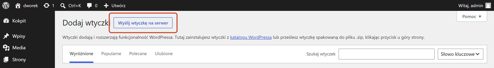
Wskaż plik i zainstaluj
Pojawi się pole wyboru pliku. Kliknij „Wybierz plik”, odszukaj ai-faq-generator.zip i zatwierdź. Gdy nazwa pliku pojawi się obok przycisku, kliknij „Zainstaluj”.
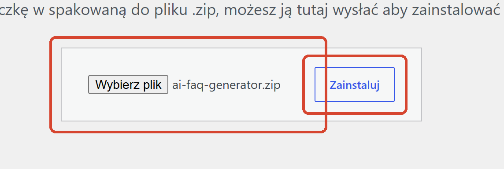
Włącz wtyczkę
Po instalacji zobaczysz komunikat o powodzeniu i odnośnik „Włącz wtyczkę”. Kliknij go. W menu po lewej pojawi się wtedy nowa pozycja AI FAQ Generator — to znak, że wszystko się udało.
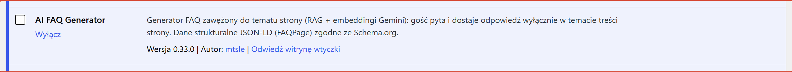
Gdy instalacja nie przechodzi. Komunikat o braku uprawnień albo o zbyt dużym pliku to ustawienie serwera, nie błąd wtyczki. Poproś wtedy informatyka lub firmę hostingową — potrzebne im szczegóły są w dokumencie „Instrukcja dla informatyka (Functional)”.
Wtyczka korzysta ze sztucznej inteligencji Google (Gemini). Żeby mogła to robić, potrzebuje Twojego klucza. Klucz jest darmowy.
Otwórz ustawienia wtyczki
W menu po lewej kliknij AI FAQ Generator, a potem Ustawienia.
Kliknij „Zdobądź darmowy klucz”
Pod polem Klucz API jest odnośnik „Zdobądź darmowy klucz →”. Otwiera stronę Google, na której logujesz się swoim kontem i klikasz przycisk tworzenia klucza. Google pokaże długi ciąg znaków — skopiuj go w całości.
Wklej klucz i zapisz
Wróć do ustawień, wklej klucz w pole Klucz API i kliknij Zapisz na dole strony. Następnie kliknij „Test połączenia” — wtyczka sprawdzi, czy klucz działa.
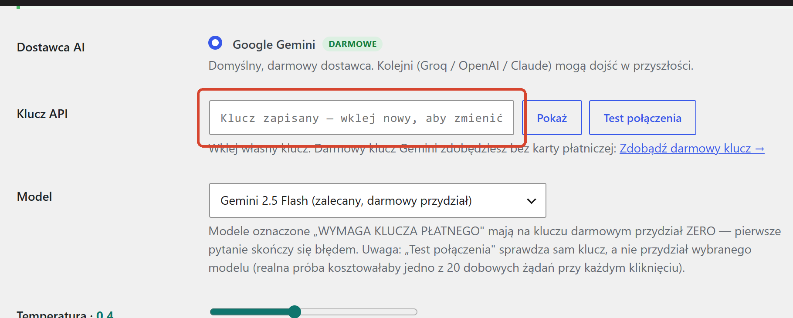
Traktuj klucz jak hasło. Nie wysyłaj go mailem ani nie wklejaj w wiadomościach. Gdyby wyciekł — wejdź na stronę Google, usuń go i wygeneruj nowy, a potem wklej nowy w to samo pole.
Trzy ustawienia, które warto sprawdzić od razu. Wszystkie są na tej samej stronie, pod polem klucza.
Zostaw Gemini 2.5 Flash. Jest oznaczony jako zalecany i mieści się w darmowym przydziale.
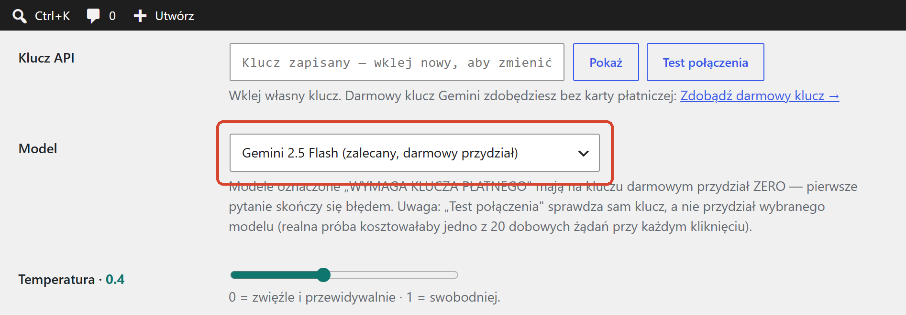
Ważne. Modele opisane jako „WYMAGA KLUCZA PŁATNEGO” mają na darmowym kluczu przydział zero — pierwsze pytanie skończy się błędem. Jeśli nie masz pewności, nie zmieniaj tego ustawienia.
Pole Język FAQ, kilka linijek niżej — ustaw język, w którym wtyczka ma odpowiadać Twoim klientom. Domyślnie polski.
Wtyczka tworzy na Twojej witrynie osobną stronę, na której goście zadają pytania.
Domyślnie ma adres kończący się na /faqgenerator, ale możesz wpisać
własny — na przykład pytania albo generator-faq.
Po zmianie adresu wejdź w Ustawienia → Bezpośrednie odnośniki w kokpicie i kliknij tam Zapisz. To odświeża adresy na stronie. Bez tego nowy adres może pokazywać „nie znaleziono”.
To najważniejszy krok całego uruchomienia. Bez niego wtyczka nie wie nic o Twojej firmie i będzie odmawiać odpowiedzi na każde pytanie.
Wejdź w „Dashboard”
W menu po lewej: AI FAQ Generator → Dashboard. Zobaczysz kafelki pokazujące, ile treści wtyczka już zna i ile pytań zużyła dzisiaj.
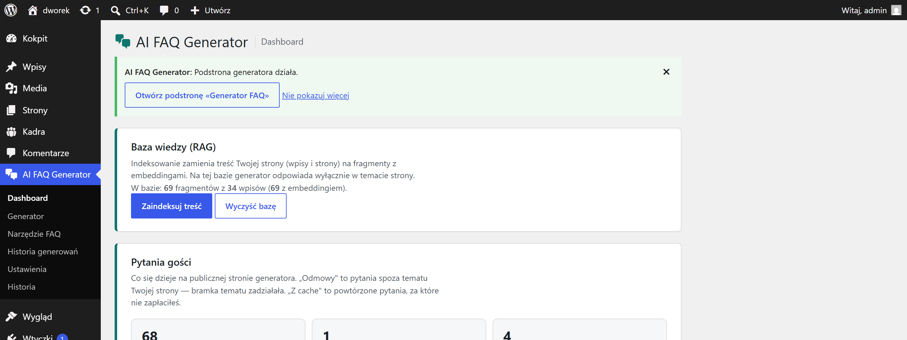
Kliknij „Zaindeksuj”
Wtyczka przeczyta strony i wpisy Twojej witryny. Przy niewielkiej stronie zajmie to kilkadziesiąt sekund, przy dużej — kilka minut. Nie zamykaj okna w trakcie.
Gdy skończy, licznik na Dashboardzie pokaże liczbę zapamiętanych fragmentów. To znaczy, że wtyczka jest gotowa do pracy.
Za każdym razem, gdy istotnie zmienisz treść strony: dodasz nową usługę, zmienisz cennik, opublikujesz ważny wpis. Poprawka literówki nie wymaga powtarzania.
Gdyby indeksowanie przerwało się w połowie — nic się nie stało. Kliknij ponownie „Zaindeksuj”; wtyczka dokończy od miejsca, w którym stanęła. Przy bardzo dużych stronach potrafi wznowić się sama.
To bywa mylące na początku, więc wyjaśnijmy od razu: wszystko możesz zrobić na dwa sposoby. Wybierz ten, który Ci wygodniejszy — robią dokładnie to samo.
Menu AI FAQ Generator po lewej stronie kokpitu. Znajdziesz tam sześć pozycji: Dashboard, Generator, Narzędzie FAQ, Historia generowań, Ustawienia i Historia.
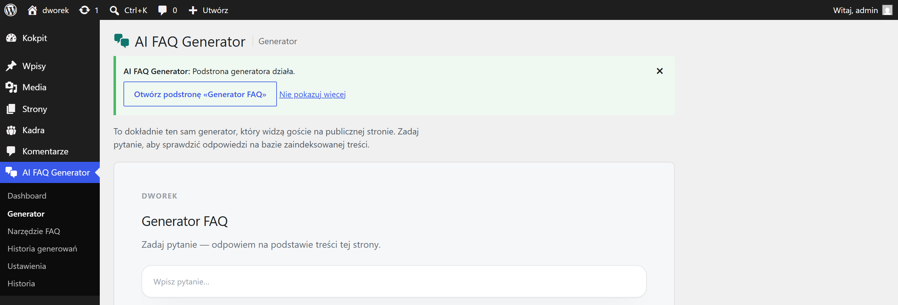
Wejdź na swoją stronę z pytaniami (tę spod adresu z rozdziału 4), będąc zalogowanym. Zobaczysz Panel właściciela z zakładkami — te same funkcje, ale bez wchodzenia do kokpitu.
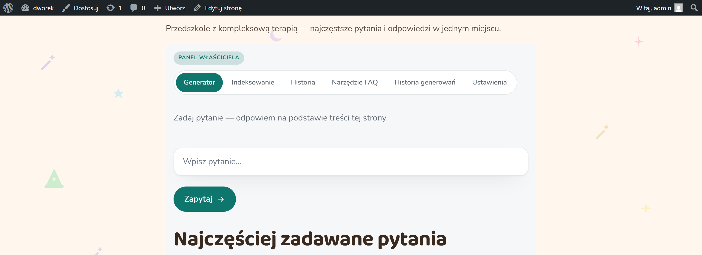
Zapamiętaj. Napis „PANEL WŁAŚCICIELA” oznacza, że oglądasz stronę jako zalogowany właściciel. Chcesz zobaczyć, co widzą klienci? Otwórz tę samą stronę w oknie prywatnym przeglądarki.
Najprostszy sposób, żeby sprawdzić, czy wtyczka dobrze zna Twoją stronę. Zadaj pytanie, na które znasz odpowiedź.
Wpisz pytanie
AI FAQ Generator → Generator. Wpisz pytanie w pole i kliknij Zapytaj. Formułuj je tak, jak zrobiłby to klient — pełnym zdaniem, a nie hasłem.
Przeczytaj odpowiedź
Odpowiedź pojawia się po kilku sekundach — powstaje wyłącznie na podstawie treści Twojej strony.
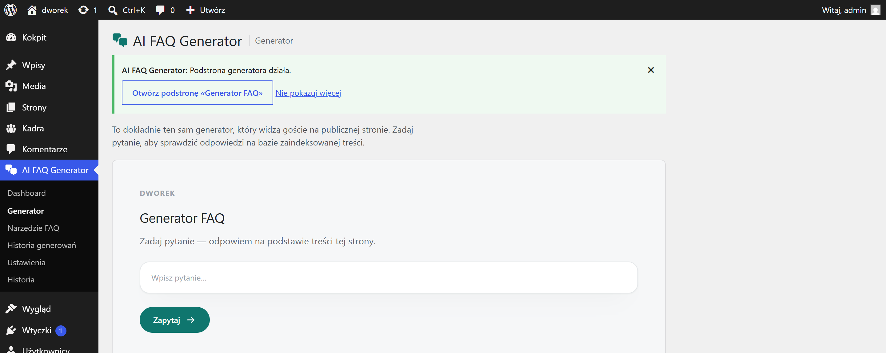
Prawie zawsze znaczy to jedno: na stronie nie ma tej informacji. Jeśli dopiero ją dodałeś — powtórz indeksowanie (rozdział 5).
Napis „odpowiedź z pamięci” pod odpowiedzią oznacza, że ktoś już wcześniej zadał to samo pytanie. Wtyczka podaje wtedy zapamiętaną odpowiedź — szybciej i bez zużywania dobowego przydziału.
Zamiast układać listę pytań ręcznie, podajesz temat, a wtyczka sama proponuje pytania wraz z odpowiedziami.
Podaj temat i krótki opis
AI FAQ Generator → Narzędzie FAQ. W polu tematu wpisz, czego ma dotyczyć zestaw — na przykład „Zapisy dziecka do przedszkola”. W opisie dodaj jednym zdaniem, o co zwykle pytają klienci.
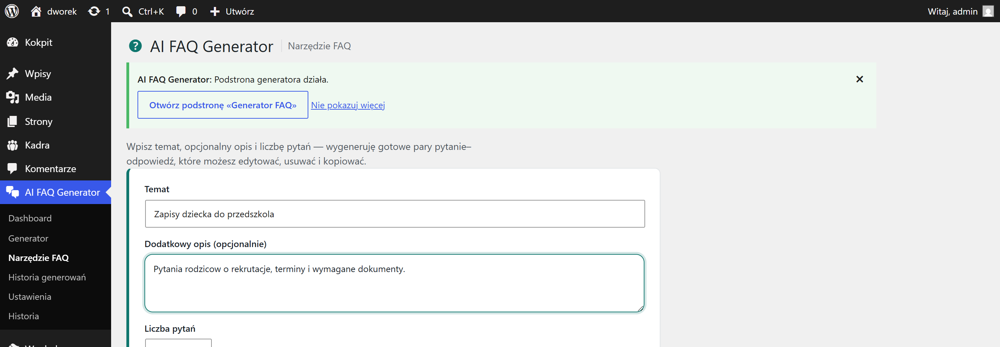
Poczekaj na zestaw
Generowanie trwa zwykle kilkanaście sekund. Wynik to lista pytań z gotowymi odpowiedziami, opartymi na treści Twojej strony.
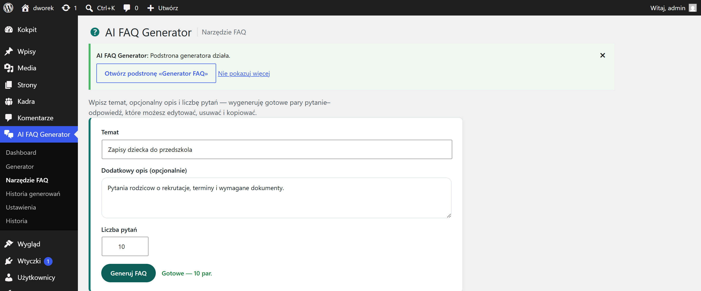
Przeczytaj, zanim opublikujesz
To Twoja firma i Twoje słowo. Przejrzyj odpowiedzi, popraw, co brzmi nie po Twojemu, usuń pytania, które są zbędne.
Gotowy zestaw możesz pokazać odwiedzającym albo zapisać na dysk. Przyciski znajdziesz pod wynikami.
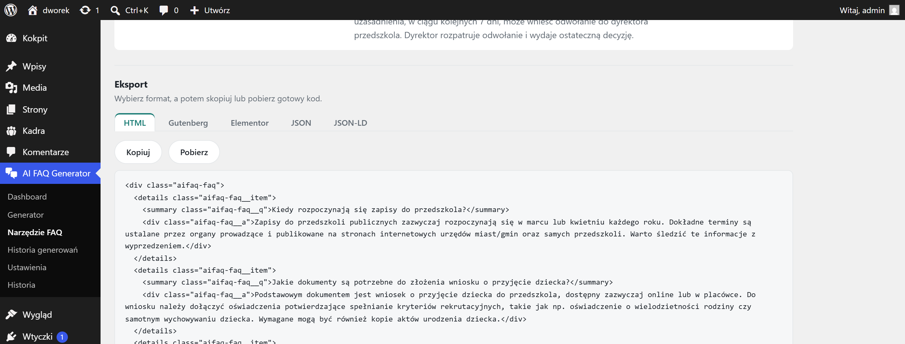
Kliknięcie publikacji sprawia, że zestaw pojawia się na Twojej stronie z pytaniami — pod polem, w którym goście zadają pytania. Od tej chwili każdy odwiedzający widzi gotowe odpowiedzi, bez pytania o cokolwiek.
Zestaw możesz też pobrać na dysk i wykorzystać gdzie indziej — wkleić do ulotki, wysłać pracownikowi, wrzucić na inną stronę.
Publikujesz nowy zestaw? Zastąpi on poprzedni. Wtyczka pamięta jednak, co było wcześniej — poprzedni zestaw znajdziesz w Historii generowań (rozdział 11) i możesz do niego wrócić.
Gdy publikacja się nie udaje. Jeżeli zestaw publikuje kilka osób jednocześnie, wtyczka przepuści tylko jedną zmianę i pokaże pozostałym komunikat. To zabezpieczenie przed cichym nadpisaniem czyjejś pracy — po prostu odśwież stronę i sprawdź, co ostatecznie jest opublikowane.
Warto raz zobaczyć swoją stronę oczami klienta. Otwórz ją w oknie prywatnym przeglądarki — wtedy nie jesteś zalogowany.
Gość widzi pole pytania oraz opublikowany zestaw FAQ. Nie widzi panelu właściciela ani ustawień.
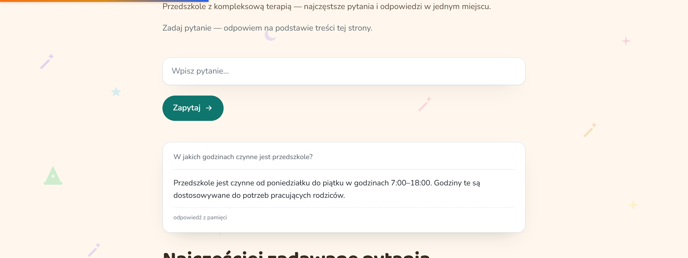
Wtyczka wtedy odmawia — i to jest zachowanie prawidłowe. Nie zmyśla odpowiedzi o rzeczach, których na stronie nie ma.
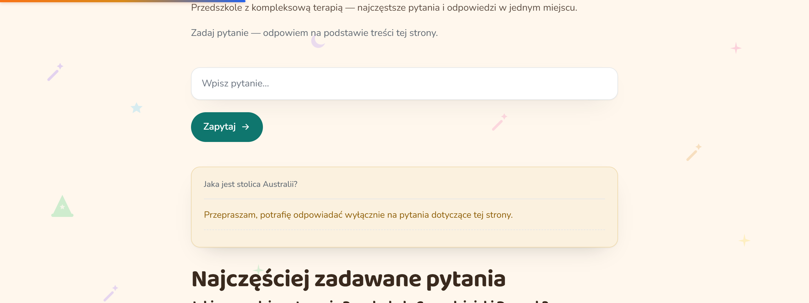
To zaleta, nie usterka. Dzięki temu wtyczka nie opowie Twojemu klientowi nieprawdy o cenach, terminach czy zakresie usług.
Dwa dzienniki, dwa różne zastosowania.
AI FAQ Generator → Historia. Lista pytań zadanych przez odwiedzających. To najcenniejsza informacja, jaką daje Ci ta wtyczka: widzisz, czego klienci szukali i czego nie znaleźli na Twojej stronie.
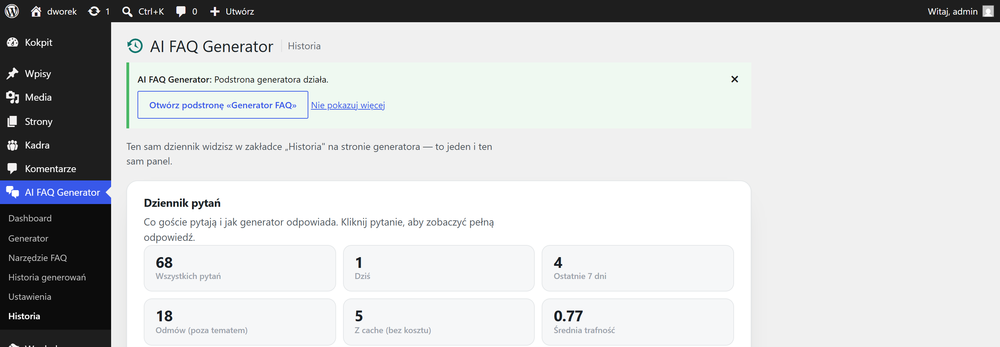
AI FAQ Generator → Historia generowań. Zapis wszystkich zestawów FAQ, które wygenerowałeś. Możesz wrócić do starszego zestawu albo porównać go z obecnym.
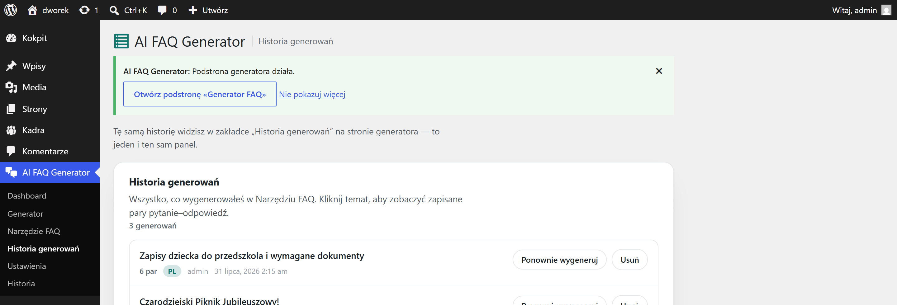
Możesz przygotować osobny zestaw pytań dla pojedynczego wpisu lub strony — na przykład FAQ tylko o rekrutacji, przy stronie o rekrutacji.
Otwórz dowolny wpis lub stronę do edycji. Obok treści znajdziesz panel wtyczki. Działa tak samo jak Narzędzie FAQ, ale wynik przypisuje się do tej jednej strony.
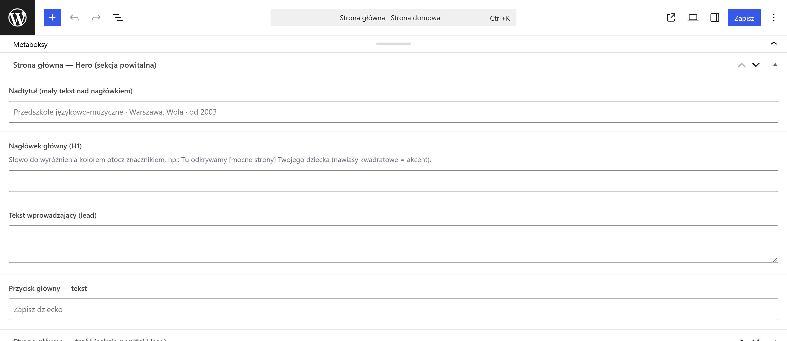
Kiedy to ma sens? Gdy jedna podstrona wywołuje powtarzalne pytania — cennik, rekrutacja, dojazd. Klient dostaje odpowiedzi w miejscu, w którym ich szuka.
Tego rozdziału możesz nie czytać — domyślne wartości są dobrane rozsądnie. Wróć tu, gdy zechcesz coś dostroić.
Decydują, jak blisko tematu musi być pytanie, żeby wtyczka w ogóle odpowiedziała. Podniesienie progu = mniej odpowiedzi, ale pewniejszych. Obniżenie = więcej odpowiedzi, część mniej trafna.
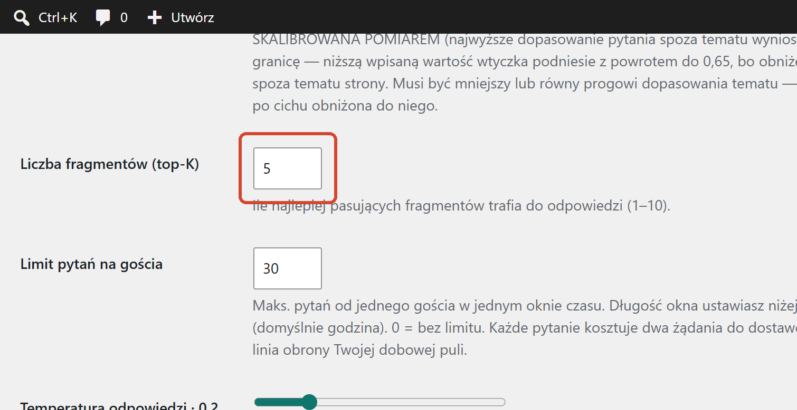
Ograniczenie liczby pytań, jakie jeden gość może zadać w danym czasie — domyślnie 10 pytań na godzinę od jednej osoby. Chroni dobowy przydział przed wyczerpaniem przez jednego odwiedzającego.
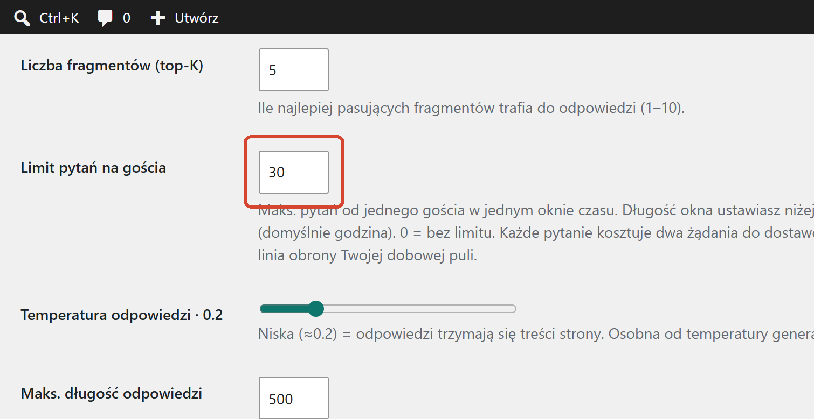
Wtyczka może sama dodać odnośnik do strony z pytaniami w menu Twojej witryny. Wybierasz, w którym menu ma się pojawić.
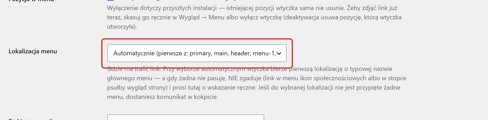
Zestawienie najczęstszych kłopotów. W większości przypadków rozwiązanie zajmuje minutę.
| Co widzisz | Co zrobić |
|---|---|
| Wtyczka odmawia odpowiedzi na każde pytanie | Prawie na pewno brakuje indeksowania. Wejdź w Dashboard i kliknij „Zaindeksuj” (rozdział 5). |
| Błąd zaraz po zadaniu pytania | Sprawdź klucz: Ustawienia → „Test połączenia”. Jeśli test przechodzi, sprawdź, czy nie wybrałeś modelu wymagającego klucza płatnego. |
| „Wyczerpano dobowy przydział” | Wykorzystałeś dzienną pulę (domyślnie 12 pytań). Wtyczka wróci do pracy następnego dnia. Stan zużycia widzisz na Dashboardzie. |
| Strona z pytaniami pokazuje „nie znaleziono” | Wejdź w Ustawienia → Bezpośrednie odnośniki (w kokpicie) i kliknij tam „Zapisz”. To odświeża adresy. |
| Odpowiedzi są ogólnikowe | Wtyczka zna tylko to, co jest na stronie. Uzupełnij treści i zaindeksuj ponownie. |
| Indeksowanie zatrzymało się w połowie | Kliknij „Zaindeksuj” ponownie — dokończy od miejsca, w którym stanęło. |
| Nie widzę panelu na stronie z pytaniami | Panel właściciela widać tylko po zalogowaniu. Zaloguj się do kokpitu i odśwież stronę. |
| Komunikat o braku uprawnień przy publikacji | Publikować może właściciel strony i redaktor. Poproś o odpowiednie uprawnienia albo o wykonanie publikacji. |
Nadal nie działa? Przekaż informatykowi osobną instrukcję dla informatyka — są w niej komunikaty techniczne, wymagania serwera i sposób sprawdzenia, co poszło nie tak.
Dwie różne rzeczy — warto znać różnicę, zanim klikniesz.
Wtyczki → Wyłącz przy pozycji AI FAQ Generator. Wtyczka przestaje działać, strona z pytaniami znika, ale wszystko zostaje zapamiętane: ustawienia, klucz, baza wiedzy, historia. Po ponownym włączeniu wraca stan sprzed wyłączenia.
Używaj, gdy chcesz tymczasowo wstrzymać działanie albo sprawdzić, czy wtyczka nie koliduje z inną.
Najpierw wyłącz, potem Usuń. Wtyczka sprząta po sobie całkowicie: kasuje swoje ustawienia, bazę wiedzy, historię pytań i zadania cykliczne. W bazie Twojej strony nie zostaje po niej ślad.
Usunięcia nie da się cofnąć. Historia pytań gości i wygenerowane zestawy FAQ przepadają bezpowrotnie. Jeśli chcesz je zachować — najpierw pobierz zestawy do pliku (rozdział 9).
Nie musisz w tym celu nic usuwać. Wejdź w Ustawienia, wklej nowy klucz w pole Klucz API i zapisz — stary zostanie zastąpiony.
To wszystko.
Jeśli przeszedłeś rozdziały 1–5, wtyczka działa. Reszta to wygoda i dostrajanie.